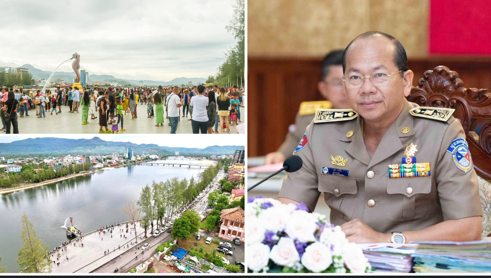

សូមស្វាគមន៍មកកកាន់
ខេត្តកំពត
ខាងក្រោមនេះអ្នកនឹងអាចយល់ដឹងអំពីព័ត៌មានក្នុងខេត្តកំពត
មាតិការ
១.ប្រវតិ្តខេត្តកំពត............................................................................................។
២.ទីតាំងភូមិសាស្ត្រ.........................................................................................។
៣.ប្រជាជន និងវប្បធម៌..................................................................................។
៤.ស្ថាបត្យកម្ម និងសំណង់សំខាន់ៗ................................................................។
៥.ការអប់រំ និងស្ថាប័នសិក្សា...........................................................................។
៦.សេដ្ឋកិច្ច........................................................................................................។
៧.ទេសចរណ៍...................................................................................................។
៨.ការអភិវឌ្ឍនាអនាគត..................................................................................។
ប្រវតិ្តខេត្តកំពត
មាតិកាខេត្ត កំពត គឺជាខេត្តមួយមានប្រវត្តិយូរមកពីសម័យអាណានិគមបារាំង។ កំពតត្រូវបានគេស្គាល់ថាជាមជ្ឈមណ្ឌលសេដ្ឋកិច្ច និងរដ្ឋបាលសំខាន់ នៅសម័យបារាំង ដែលបានសាងសង់អគារជាច្រើនបែបអឺរ៉ុបនៅទីក្រុង។ ខេត្តនេះមានឈ្មោះល្បីក្នុងការផលិត ម្ទេសកំពត ដែលជាទំនិញនាំចេញពិភពលោក។ កំពតក៏ជាទីកន្លែងមានប្រវត្តិសាស្ត្រទាក់ទងនឹងសង្គ្រាម និងអង្គការទំនើបនានា នៅសម័យកន្លងមក។ សព្វថ្ងៃ កំពតក្លាយជាគោលដៅទេសចរណ៍ដែលរួមបញ្ចូលទាំងប្រវត្តិសាស្ត្រ ធម្មជាតិ និងស្ថាបត្យកម្មបុរាណ។
ទីតាំងភូមិសាស្ត្រ
មាតិកាខេត្ត កំពត ស្ថិតនៅភាគនិរតីនៃប្រទេសកម្ពុជា មានចម្ងាយប្រហែល ១៤៨ គីឡូម៉ែត្រ ពីរាជធានីភ្នំពេញ។ ខេត្តនេះមានព្រំប្រទល់ទិសខាងកើតជាប់ខេត្តកោះកុង និងខេត្តកែប, ខាងលិចជាប់ខេត្តកណ្ដាល និងកំពង់ស្ពឺ, ខាងជើងជាប់ខេត្តតាកែវ, ខាងត្បូងជាប់ឆ្នេរសមុទ្រថៃ។ ទីតាំងភូមិសាស្ត្រនេះធ្វើឲ្យកំពតមានទេសភាពចម្រុះ រួមទាំងភ្នំដងរែក, ភ្នំបូកគោ, ទន្លេកំពត និងឆ្នេរសមុទ្រដ៏ស្រស់ស្អាត។ ការស្ថិតនៅជិតឆ្នេរធ្វើឲ្យកំពតមានអត្ថប្រយោជន៍ក្នុងទេសចរណ៍ កសិកម្ម និងពាណិជ្ជកម្មជាមួយតំបន់ជិតខាង។
ប្រជាជន និងវប្បធម៌
មាតិកាខេត្ត កំពត មានប្រជាជនជាង ៦០ម៉ឺននាក់ ដែលភាគច្រើនជាជនជាតិខ្មែរ និងជាពុទ្ធសាសនិក។ ក្រៅពីនេះ ក៏មានសហគមន៍ជនជាតិចិន វៀតណាម និងជនជាតិដើមភាគតិចផ្សេងៗ ដែលរស់នៅជាមួយគ្នាដោយមានសន្តិភាព។ វប្បធម៌កំពតបង្ហាញពីប្រពៃណីជីវិតជនបទ ដូចជា ការធ្វើស្រែ ការចិញ្ចឹមជ្រូកមាន់ និងការនេសាទតាមទន្លេ។ ពិធីបុណ្យប្រពៃណីដូចជា បុណ្យចូលឆ្នាំខ្មែរ បុណ្យភ្ជុំបិណ្ឌ និងបុណ្យអុំទូក តែងតែអញ្ជើញឲ្យប្រជាពលរដ្ឋ និងភ្ញៀវទេសចរចូលរួមយ៉ាងសប្បាយរីករាយ។ ទីក្រុងកំពត និងសហគមន៍ជុំវិញក៏មានសិល្បៈ បទភ្លេង និងអាហារប្រពៃណី ដែលក្លាយជាស្នាដៃសំខាន់ក្នុងការទាក់ទាញភ្ញៀវទេសចរផងដែរ។
ស្ថាបត្យកម្ម និងសំណង់សំខាន់ៗ
មាតិកាខេត្ត កំពត មានស្ថាបត្យកម្មចម្រុះ ដែលបង្ហាញពីរបៀបរស់នៅ និងប្រវត្តិសាស្ត្ររបស់ទីក្រុងតាមយុគសម័យ។ នៅទីក្រុងកំពត អ្នកអាចឃើញអគារបែបអាណានិគមបារាំងជាច្រើន ដែលនៅសល់តាំងពីសតវត្សទី១៩ ដូចជា ផ្ទះបាយ អគាររដ្ឋបាល និងសាលារាជធានីកាលនោះ។ សំណង់ទាក់ទាញទេសចរណ៍រួមមាន ព្រះវិហារវត្តត្រីគោ និង ព្រះវិហារវត្តអំពិលប្រាំ ដែលជាកន្លែងសក្ការបូជាសំខាន់ៗ។ លើសពីនេះ នៅលើ ភ្នំបូកគោ មានសំណង់បុរាណសាងសង់តាំងពីសម័យបារាំង ដូចជា វិហារខ្ពស់ និងសណ្ឋាគារបូកគោ ដែលសព្វថ្ងៃក្លាយជាគោលដៅទេសចរណ៍ពេញនិយម។ ស្ថាបត្យកម្មទាំងនេះបង្ហាញពីការលាយបញ្ចូលប្រពៃណីខ្មែរ និងឥទ្ធិពលបារាំង។
ការអប់រំ និងស្ថាប័នសិក្សា
មាតិកាខេត្ត កំពត មានប្រព័ន្ធអប់រំចាប់ពីកម្រិតបឋមសិក្សា រហូតដល់អនុវិទ្យាល័យ និងវិទ្យាល័យ ដែលបម្រើការសិក្សារបស់កុមារ និងយុវជនក្នុងតំបន់។ នៅទីក្រុងកំពត មានសាខាសាកលវិទ្យាល័យ និងវិទ្យាស្ថានជាច្រើន ដូចជា សាកលវិទ្យាល័យប៊ូធីសាស្ត្រ, សាកលវិទ្យាល័យបៀលប្រាយ និងវិទ្យាស្ថានបណ្តុះបណ្តាលវិជ្ជាជីវៈ។ ការអប់រំក្នុងខេត្តកំពតផ្តោតលើការផ្តល់ឱកាសសិក្សាដល់កុមារទាំងអស់ ដោយមានការគាំទ្រពីអង្គការមូលនិធិ និងអង្គការមិនមែនរដ្ឋាភិបាល (NGOs)។ ក្រៅពីនេះ ការបណ្តុះបណ្តាលជំនាញវិជ្ជាជីវៈ ដូចជា កសិកម្ម ទេសចរណ៍ និងជំនាញបច្ចេកទេស ត្រូវបានអភិវឌ្ឍ ដើម្បីឆ្លើយតបទៅតាមតម្រូវការទីផ្សារការងារ។
សេដ្ឋកិច្ច
មាតិកាសេដ្ឋកិច្ចរបស់ខេត្ត កំពត មានមូលដ្ឋានលើ កសិកម្ម, នេសាទ, និង ទេសចរណ៍ ជាចម្បង។ កំពតល្បីលើផលិតផល ម្ទេសកំពត ដែលត្រូវបានទទួលស្គាល់ជាសកល និងមានតម្លៃខ្ពស់នៅទីផ្សារបរទេស។ ក្រៅពីនេះ ការដាំដំណាំផ្សេងៗដូចជា ស្រូវ ផ្លែឈើ និងការចិញ្ចឹមជ្រូកមាន់ ក៏ជួយបង្កើតចំណូលសម្រាប់ប្រជាជន។ វិស័យនេសាទតាមទន្លេ និងឆ្នេរខេត្តកំពតក៏មានសារៈសំខាន់ក្នុងការផ្គត់ផ្គង់អាហារនិងចិញ្ចឹមជីវភាព។ ភាគច្រើននៃសេដ្ឋកិច្ចកំពតកំពុងពឹងផ្អែកលើ ទេសចរណ៍អេកូ ដូចជា ភ្នំបូកគោ ទន្លេកំពត និងឆ្នេរប្រណីត ដែលទាក់ទាញភ្ញៀវទេសចរជាច្រើន។ ការវិនិយោគពីឯកជន និងបរទេសក៏ជួយជំរុញឲ្យសេដ្ឋកិច្ចកំពតមានការរីកចម្រើនជាបន្តបន្ទាប់។
ទេសចរណ៍
មាតិកាខេត្ត កំពត គឺជាគោលដៅទេសចរណ៍ដ៏ពេញនិយម ដែលរួមបញ្ចូលទាំងធម្មជាតិ ស្ថាបត្យកម្ម និងវប្បធម៌។ ភ្នំបូកគោ ជាទីកន្លែងល្បី ដែលមានអាកាសធាតុត្រជាក់ និងសំណង់បែបអាណានិគមបារាំង។ ទន្លេកំពត ក៏ជាទីកន្លែងសំខាន់សម្រាប់ការធ្វើទេសចរណ៍ទូក និងកម្សាន្តតាមឆ្នេរទន្លេ។ កំពតក៏មានឆ្នេរសមុទ្រដ៏ស្រស់ស្អាត ជាពិសេសតំបន់ជិតកែប ដែលមានទេសភាពសមុទ្រស្រស់បំព្រង។ លើសពីនេះ កសិដ្ឋានម្ទេស និងកសិដ្ឋានផ្លែឈើ ក៏ក្លាយជាកន្លែងទាក់ទាញភ្ញៀវទេសចរដើម្បីស្គាល់ពីជីវភាពជនបទ។ ទេសចរណ៍កំពតជួយផ្តល់ចំណូលដល់ប្រជាជន និងជំរុញឱ្យខេត្តមានការរីកចម្រើនយ៉ាងចម្រុះ។
ការអភិវឌ្ឍនាអនាគត
មាតិកាខេត្ត កំពត ត្រូវបានកំណត់ជាតំបន់អភិវឌ្ឍសំខាន់មួយរបស់កម្ពុជា ដោយផ្តោតលើ ទេសចរណ៍អេកូ, កសិកម្មស្តង់ដារអន្តរជាតិ, និង វិនិយោគឧស្សាហកម្មស្រាល។ រដ្ឋាភិបាលមានគម្រោងអភិវឌ្ឍហេដ្ឋារចនាសម្ព័ន្ធ ដូចជា ផ្លូវជាតិ ទំនប់ និងប្រព័ន្ធភ្លើងទំនើប ដើម្បីគាំទ្រការធ្វើដំណើរ និងដឹកជញ្ជូនទំនិញ។ ការអភិវឌ្ឍឆ្នេរ កំពង់ផែ និងតំបន់កែប-កំពត ត្រូវបានគេសង្កេតថា អាចក្លាយជាមជ្ឈមណ្ឌលទេសចរណ៍ឆ្នេរសកល។ ក្រៅពីនេះ កំពតក៏កំពុងទទួលការចាប់អារម្មណ៍ពីវិនិយោគិនបរទេសក្នុងវិស័យអចលនទ្រព្យ និងសណ្ឋាគារ។ ទិសដៅអនាគតនៃកំពត គឺក្លាយជាតំបន់អភិវឌ្ឍសេដ្ឋកិច្ច-ទេសចរណ៍បៃតង ដែលបន្សល់ទុកអត្តសញ្ញាណវប្បធម៌ និងធម្មជាតិដ៏ស្រស់ស្អាត។
